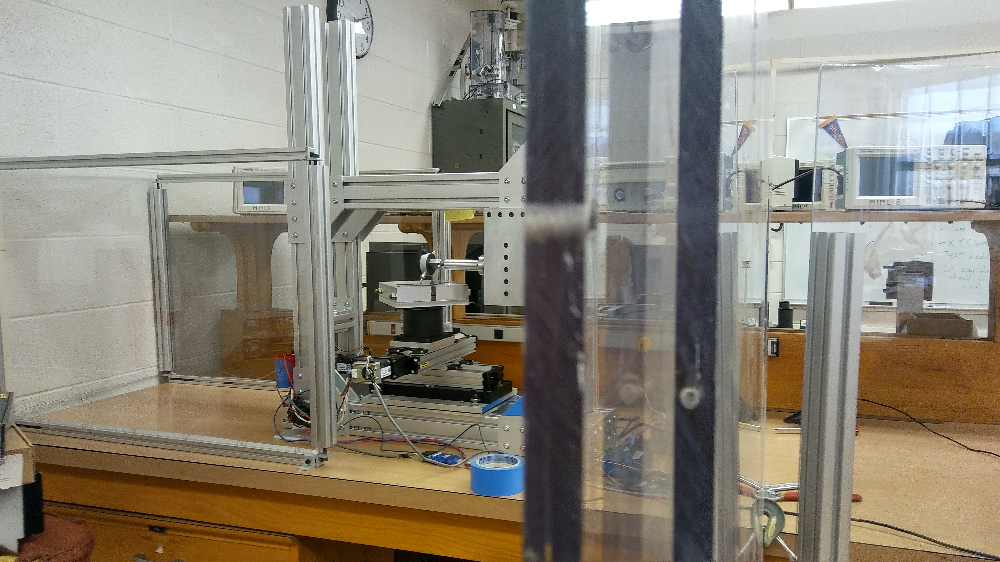

Manufacturing Microfibrillar Adhesives
Significant progress has been made in the
technological fields involved in the production of numerous
adhesives designed for a wide range of applications. Many of
these chemical adhesives lack control, reusability, and
diversity when compared to directional dry adhesives.
Microfibrillar adhesives, modeled after the natural adhesion of
gecko toe pads, adhere to metal, glass, plastic, wood
panels, and similar surfaces.
The gecko-based adhesive presents a very small area
of contact when unloaded. When the fibers are loaded in a
general shear direction, they bend. The bending of the fibers
results in a greater contact area and greater adhesion
capabilities. Because of this, a high aspect ratio between the
width and depth of the fibers is required in order to have
adequate adhesion.
The fabrication method introduced is similar to the method introduced by Stanford University. A dicing blade is spun at 10,000 RPM to machine the surface of the mold material. A polycarbonate or glass substrate is held
fixed by aluminum vice. Two actuators and a micrometer stage
is attached to the vice, allowing the control over the three
planar degrees of freedom. The movements of the actuators
are automated by the SEM Terminal codes and the MATLAB
program.
